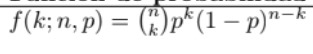

La estadística es una disiplina cientifica que se encarga de estudiar la variabilidad y las leyes de la probabilidad utilizando herramientas conceptuales y de muestreo. Utiliza métodos y procedimientos para recolectar información de la realidad y organizarla, contextualizarla y clasificarla, obteniendo conclusiones viables, expresadas de forma matemática. Requiere del uso de cuatro niveles de medicion de datos llamados: escalas de medición estadística que son: Nominal, Ordinal, Intervalar y Racional
Es aquella que analiza la elección de una persona ante una acción, entre un conjunto de acciones posibles, dando el mejor resultado, dadas las preferecias del usuario. Est es un proceso mental que se lleva a cabo en función de la información que se tiene al alcance, este es resultado de la formación academica y familiar de los valores y actitudes con los que se conduce una persona
Se trata de un conjunto de elementos que son de interés para realizar un experimento, un estudio o una consideración de cualquier tipo. Se puede componer de individuos, animales, fenómenos, u eventos. Por lo tanto la Población en estadística representa el universo de los elementos a considerar, es decir, todo lo que la conforma.
Es un procedimiento de selección de los elementos muestrales realizados segun el juicio del investigador. Por lo tanto es subjetivo y la muestra obtenida puede no ser representativa de la población
Tambien llamadas variables aleatorias, es aquellaque toma diversos valores o conjuntos de valores con distintas probabilidades
los datos agrupados son aquellos que se clasifican en función de de un criterio, mostrando frecuencias para una clase o grupo formado. los no agrupados son un conjunto de observaciones que se presentan de forma original, para poder obtener información directamente de ellos.
se trata de una frecuencia que se situa dentro de un intervalo de clase determinado en una distribución estadística agrupada o histograma construido a partir de ella.
Es una forma de expresar cuán a menudo aparece un valor dentro de un conjunto de datos.
Es un punto especifico en el centro de los contenedores dentro de una tabla de distribución de frecuencia.
Son entidades numéricas utilizadas para señalar la posición que ocupa un dato determinado.
Es una medida de tendencia central que proporciona información de referencia sobre la forma en que se distribuyen los datos en un conjunto de observaciones
Es el producto de de multiplicar todos los valores individuales y luego redistribuirlos en porciones iguales, de manera que el producto total siga siendo el mismo.
La media ponderada es la medida de tendencia central mas usada cuando algunos valores por promediar son mas importantes que otros.
Es el valor que queda en el centro tras la división de una serie de valores ordenados en dos partes iguales, una superior y una inferior.
Es el valor que se representa con mas frecuenciaen una serie de mediciones.
Expresa la distribución de de los datos en torno a alguna de las medidas de centralización definidas antes, y son un complemento a estas alturas para describir mas fielmente un conjunto de datos
Permite entender mejor los datos. Ofrece multiples capas a las que podemos aproximarnos. Es decir, ayuda a comprender la noción de disperción.
Mide el nivel de disperción, es decir, indica lo uniforme que es un conjunto de datos.
es el parametro de disperción que se usa para calcular que tanto se desvía en promedio los datos de la distribuciónentre la media aritmética.
Mide la disperción estadística de un conjunto de datos usando las diferencias
Es la diferencia del valor mas grande y el valor mas pequeño en un conjunto de datos
Son esenciales para calcular medidas con tendencia central y de dispersión al usar intervalos de datos agrupados
Muestra los datos de una frecuencia de manera organizada, tambien el numero de veces que aparece un valor dentro de un conjunto de datos.
Ayuda a organizar los datos de manera que se puedan calcular y analizar medidas estadísticas
Son métodos que ayudan a estudiar las características o propiedades de una población
Es una representación grafica de la distribución de un conjunto de datos. Permite comparar y estimar la distribución empírica con la distribución téorica, ademas de mostrar los resultados de una forma mas explicita
Se trata de fórmulas y procesos matemáticos que nos permiten determinar el total de resultados posibles en un evento o experimento.
Permite medir de cuantas formas se pueden realizar algo y cuantas formas hay para hacerlo
Estima la probabilidad de que dos eventos ocurran al mismo tiempo. Depende de dos reglas: la regla especial y la regla general
Es una forma de obtener el producto sucesivo, se reconoce por medio de este signo "!"
Se usa para mostrar el orden en que se mostraran los objetos o eventos
Se tratan de agrupaciones donde el orden no es relevante pero si el contenido del mismo
Se trata de una dispocisión de de rectangulos una estructura jerarquica de datos. Tienen la finalidad de mostrar la estructura y tamaño de archivos de un disco duro
Es un resultado que nos permite calcular la probabilidad de obtener un numero especifico de exitos con pruebas de bernoulli independientes
Asigna un número posible de resultados que pueden suceder en un experimento aleatorio, con la finalidad de saber si un suceso es mas probable que otro
Es un conjunto donde todos los resultados posibles de forma individual de unexperimento aleatorio. Nos permite calcular la frecuencia con la que se obtiene los resultados de una experiencia aleatoria
Es un sub-conjunto de un espacio muestral, en pocas palabras, un conjunto de posibles resultados que se obtienen en un experimento aleatorio
Son símbolos que nos ayudan a representar operaciones de probabilidad. Este tema es muy usado para temas estadisticos, ciencia de datos, economía, etc.
Es un conjunto de elementos en A o en B. De forma mas tecnica es: Dado dos sucesos A y B de un mismo experimento, se entiende por unión de ambos, y se denota por A u B.
es un suceso creado con dos sucesos comunes que intersectan, es decir, la probabilidad es igual a la probabilidad de los elementos comunes
son figuras o circulos que muestran relaciones lógicas entre varios conjuntos de elementos. es una herramienta muy útil para comprender y analizar problemas probabilisticos
Se encargan de definir la probabilidad de un evento con los terminos de la probabilidad condicional y del espacio muestral.
Es una situación donde un evento A depende de lo que suceda en un evento B, dicha dependencia es mutua.
Es una situación deonde en evento A no depende que lo que sucesa en un evento B
Es la relación de una probabilidad conjunta de dos eventos y una probabilidad individual. En otras palabras, una probabilidad conjunta de dos eventos A y B, es igual al producto de una probabilidad de un evento A y la probabilidad condicional de un evento B dado A.
Ayuda a actualizar una hipotesis de probabilidad. Es útil en problemas de diagnosticos médicos, fraudes, entre otras
Describe la probabilidad que una variable tome cirto valor o este dentro de un rango de valores
Representa el valor promedio o central de una variable aleatoria
es una medida que nos permite saber que tan alejados o dispersos se encuentran las variables con respecto al valor esperado
Es una medida de dispersión que nos permite saber que tan alejados o dispersos se encuentan las variables con respecto al valor esperado, es decir, es la raíz de la varianza
Se trata de una función la cual describe la probabilidad acumulada de una variable aleatoria
mide la distribución de probabilidadpor medio de la densidad de probabilidad, En otras palabras: Sea X una variable aleatoria continua. La distribución de probabilidad de X se define mediante una función de densidad de probabilidad f(x)
Tambien llamado media, es el valor promedio de una variable aleatoria discreta. el valor esperado de una variable aleatoria continua X es el valor promedio que se espera obtener de X, y se calcula como la integral del producto de x y su función de densidad de probabilidad f(x) en todo el rango de X.
Mide que tan disperso o alejado esta una variable aleatoria con respecto al valor esperado
Es la raíz cuadrada de la varianza continua. Dicho de otra forma, si X es una variable aleatoria continua con función de densidad f(x).
Conida tambien como FDA (función de distribución acumulada), es una función matematica que se encarga de describir laa probabilidad acumulada que toma una variable menor igual a un valor de X
Son métodos que determinan la probabilidad de una situación o evento. Dichos calculos son basados a partir de los principios de la teoria de probabilidad
Se encarga de describir la probabilidad de una variable aleatoria. Hay dos tipos de funciones: La función de masa de probabilidad (PMF) y la función de densidad de probabilidad
Ayuda a modelar situaciones donde existen dos posbiles resultados en un numero fijo de ensayos generalmente exito o fracaso. La formula para la distribución binomial es:
Para sacar la media de esta distribución se usa la siguiente formula: np
Para sacar la varianza de la distribución se utiliza la formula
El codigo de python para trabajar esta distribución es:

Extrae una muestra aleatoria de una población finita con dos tipos de elementos (exito, fracaso)
La formula para calcular su media es
La formula para calcular la varianza es
La distribución con python es
Crea un numero de eventos independientes que transcurren en un intervalo de tiempo

La formula para calcular su media es
La formula para calcular la varianza es
La distribución en python es
Adecuada a fenomenos naturales que siguen un comportamiento que al momento de graficar obtiene una forma de campana. Es la mas importante entre las funciones de densidad

La formula para calcular su media es
La formula para calcular la varianza es
La distribución en python es
Usada para hacer interferencia estadística cuando la muestra es pequeña y la desviación estandar desconocida
se usa para pruebas de hipótesis y estimación de datos de confianza con variables aleatorias usadas en una distribución normal
Se usa para pruebas de hipótesis que abarca la comparacion de dos varianzas
Ejercicio 11Es una herramienta que nos permite hacer un análisis gráfico sobre datos bivariados, en otras palabras dos conjuntos de datos
Es cuando solo se encuentra un solo predictor en ela regresión
Es una medida que muestra el grado de relación lineal de dos variables, mediante un coeficiente que varia entre -1 y 1
El coeficiente de determinación es una metrica del modelo, que indica la tasa de la varianza dentro de una variable dependiente
Se trata de una medida estadística que cuantifica la relación lineal entre dos variables. Dichos coeficientes varian entre -1 y 1
Es una distribución conjunta como estan distribuidas y correlacionadas dos variables aleatorias.